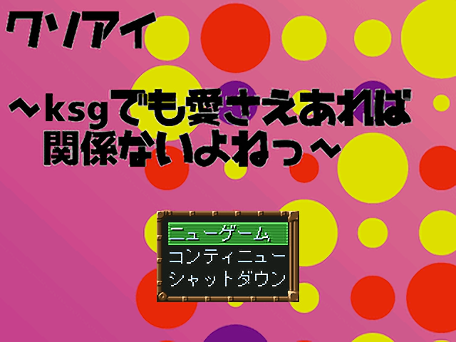

No.75 (〃ゝ∇・)ゞ |
|
 |
|
| 作者：かきぴー | |
| ツクール：ＲＰＧツクール２０００ | |
| ジャンル：少し変わったｋｓｇ | |
| 配信/投稿：可です/可です | |
| 作者コメント： わーい久しぶりのｔｋｔｋたのしい！がんばるぞー！ ちょっと変わったｋｓｇが入ってます！ プレイ時間２～２５分ぐらい？？(人による) みなさんを元気にするｋｓｇを目指します！！ |
|
| 管理人コメント： やけに広いプレイ時間の幅が気になるところ。 |
|
| ダウンロード(4.2MB) / 感想掲示板 | |
| 前の作品 / 次の作品 / TOPへ戻る | |